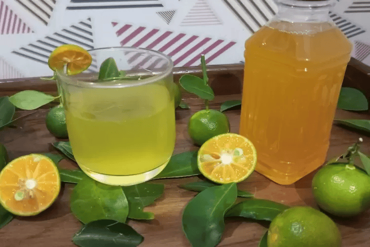

Teh Sle
Teh Sle, Minuman Rempah Asli Bengkulu yang Terinspirasi dari Sunset

Sirup Kalamansi
Sirup Kalamansi Bengkulu ini. Sudah terkenal menjadi ikon Minuman Khas Bengkulu, karena di Bengkulu bnyak sekali jeruk ini.

Teh Oolong
Teh ini mempunyai cita rasa yang unik. Minuman ini dibuat dari daun teh oolong yang diproses secara khusus.